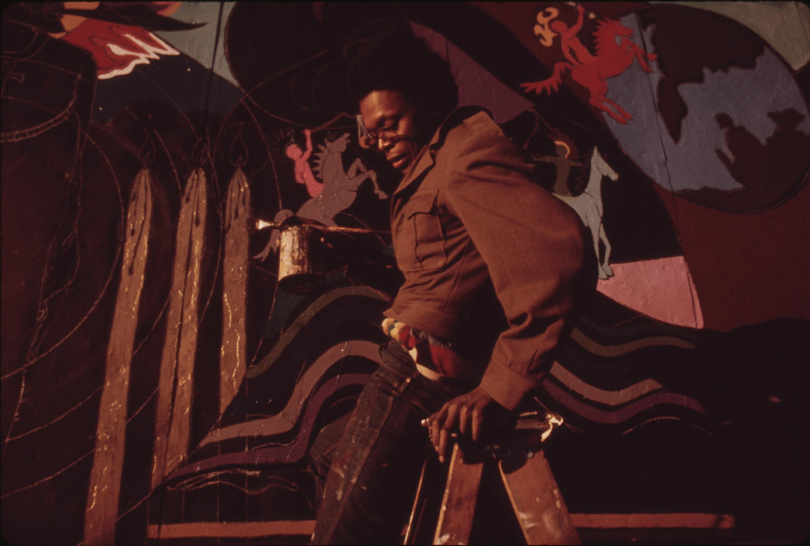

History · The Lead EssayThe Closed Exit
Racialisation, Emancipation, and the Making of Anti-Blackness.

History · The Lead EssayRacialisation, Emancipation, and the Making of Anti-Blackness.
Rome, Islamic law, medieval Europe and the Malagasy highlands: four societies that held people in hereditary subordination and still left a way out.
1C, Bantu & Rell · pp. 3–12 The Closed Exit · Chapter IINine verses that mention neither skin colour nor Africa, and how the Curse of Ham came to be read as both.
1C, Bantu & Rell · pp. 13–20 The Closed Exit · Chapter IIIAhmad Bābā’s ruling from Timbuktu, the answer from Virginia, and what the divergence shows.
1C, Bantu & Rell · pp. 21–28“A home for essays, history, and criticism that take the long view of freedom.”
Read Our Mission →